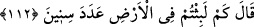
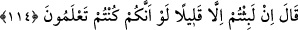

nasihat ve irşâd ehli kimselerle alay edip onları inkâr ile de yazık ederler.
112. (Allah inkârcılara) “Yeryüzünde kaç yıl kaldınız?” diye sorar.
Allah Teâlâ “Alçaldıkça alçalın orada! Bana karşı konuşmayın artık!” (108. âyet)
buyurarak dünyaya dönmenin imkânsızlığına dikkat çektikten sonra dönmeyi istedikleri
dünyada ne kadar kaldıklarını hatırlatmak için inkârcılara: Kendisine dönmek için
yalvarıp yakardığınız “yeryüzünde kaç yıl kaldınız?” diye sorar.”
113. “Bir gün veya günün bir kısmı kadar kaldık. İşte sayanlara sor.” derler.
Onlar dünyada kaldıkları müddeti, cehenneme girdikten itibaren geçen süreye nisbetle
az bularak veya dünyada geçen günler sevinç günleri olup sevinç günleri de kısa
olduğundan/tez geçtiğinden ya da dünya günleri geçtiğinden ve geçip giden yok gibi/yok
hükmünde olduğundan “Bir gün veya günün bir kısmı kadar kaldık. İşte sayanlara
sor.” Yâni eğer mâhiyetini araştırıp soruşturmak istersen dünya günlerini sayıp hesap
etmesini bilenlere sor. Çünkü biz içinde bulunduğumuz azab sebebiyle o günleri
hatırlamaya ve saymaya fırsatımız yok “derler.”
Değerli ömürde her an eşsiz hazine vardır
Böyle bir hazine her an boşa gidiyor, âh âh
et-Te’vîlâtü’n-Necmiyye’de der ki: “Sayanlara sor”, nefeslerimizi, gündüz ve
gecelerimizi sayan sorumlu meleklerden sor, demektir.”
114. Buyurur: Sadece az bir süre kaldınız; keşke siz (bunu) bilmiş olsaydınız!
Allah Teâlâ, onları dünyada kaldıkları yılları az bulmaları konusunda doğrulayarak
şöyle “buyurur: Sadece az bir süre” az bir zaman “kaldınız; keşke siz” bugün orada az
bir süre kaldığınızı bildiğiniz gibi orada iken de dünyada az bir süre kalacağınızı
“bilmiş olsaydınız.”
Bahru’l-ulûm’da der ki: “Yâni kaldığınız sürenin ne kadar olduğunu bilseydiniz bu